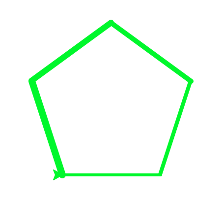

Loopy Patterns
Table of Contents
1 Shell Shock
In the last lesson, you typed commands straight into the Python Shell to create patterns. This is enormously repetitive - it'd be much more convenient if we could instead store sets of instructions as a small program, which we can use to draw with.
Try it
- In the Python Shell window, click "File -> New", and an empty window will appear.
- In here, copy and paste the following text:
import turtle
wn = turtle.Screen() # Set up the window and its attributes
wn.bgcolor("white") # Choose our background colour. US spelling.
wn.title("Turtle Power") # Window title
tess = turtle.Turtle() # Create tess and set some attributes
tess.color("green")
tess.pensize(5)
for myMoves in range(4): # Repeat the indended instructions 4 times.
tess.forward(100)
tess.left(360/4) # 360 divided by 4 sides is 90...
wn.mainloop() # Wait until the window is closed.
- Tip: Python is fussy about indentation. The two lines after the "for" command both need to be tabbed into the page. This lets Python know what instructions it is repeating, and which it isn't.
- Click File -> Save As, and save this file on your H: Drive, as "shapes.py".
- Tip: If you call this "turtle.py", your code won't work!
- Run your program by hitting the F5 key on the keyboard, or by choosing Run -> Run Module from the menu at the top of the window.
Explain it
- What shape was drawn?
- We only wrote two movement instructions. Why did the computer draw the full shape?
- Can you modify the code to draw a triangle?
- Or a pentagon?
- What if we changed the "range" number to 360, the forward to 2 and the left to 1?
Learn it
- We could add a little more code to create a program to show custom graphics, by asking the user what they wanted to see.
- Add the following line above your code, so it appears above the "for" line:
howbig=int(input("What size lines would you like? "))
for myMoves in range(3):
tess.forward(howbig)
tess.left(360/3) # 360 divided by 3 is 120.
- Run your program by hitting F5.
- This time, the shell asks the user what size sides they'd like (and stores the answer in a variable called howbig), so we can customise the side of our shape.
Try it
- Write code to ask what pen thickness (pensize) the user would like, and set the line to that thickness too.
- Change the code to also ask how many sides the shape should have, and to draw the appropriate shape automatically.
Learn it
- It might be a nice bonus if the program could identify what some of the shapes are, by using something called conditionals. In Python, we express these using IF statements.
- In our current code, add this above your for line.
numsides=int(input("How many sides would you like your shape to have (3-20)? "))
shape_name="shape with many sides"
if numsides==3:
shape_name="triangle"
if numsides==4:
shape_name="square"
print("That'll be a " + shape_name + ".")
- We start by creating a variable which I called shapename. In it, I stored the words "shape with many sides".
- My plan is to write the words "That's a XYZ ." on the shell screen before I draw the shape. If I haven't entered the name for a 200 sided shape (for example), then at least the user will be told that they've drawn a shape with many sides.
- I then use a series of IF statements to try and change the value of shapename to the correct name for the shape.
Try it
- Add all the shape names for up to 8 sides.
- In the line, 'for myMoves in range(3):', change the 3 for numsides.
- In the line, 'tess.left(360/3)', replace the 3 with numsides.
- Run the program. Use 100 sized lines and 4 sides.
Badge it
- Modify the program so that…
- Silver: the user can also choose how thick their lines will be.
- Gold: If the user enters a number below 3 or above 20, they should be told not to be so careless in future before drawing the shape anyway.
- Platinum: Building on the silver task, also change the code so that each new line drawn is thicker than the last, like this:

- Upload your code to BourneToLearn.